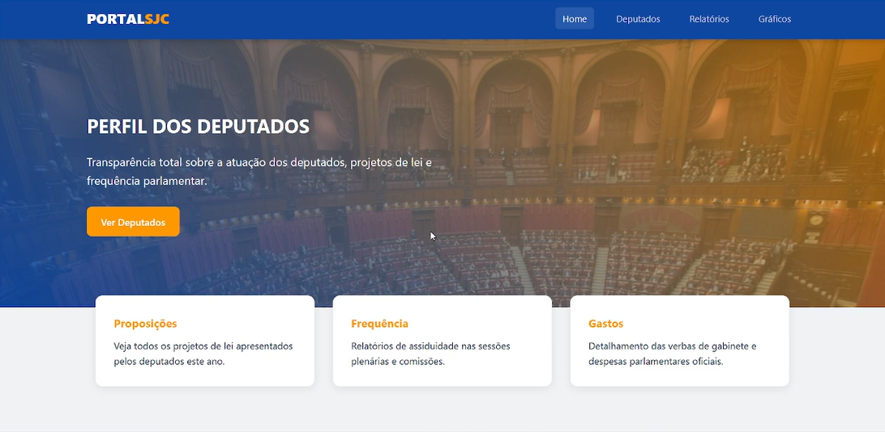
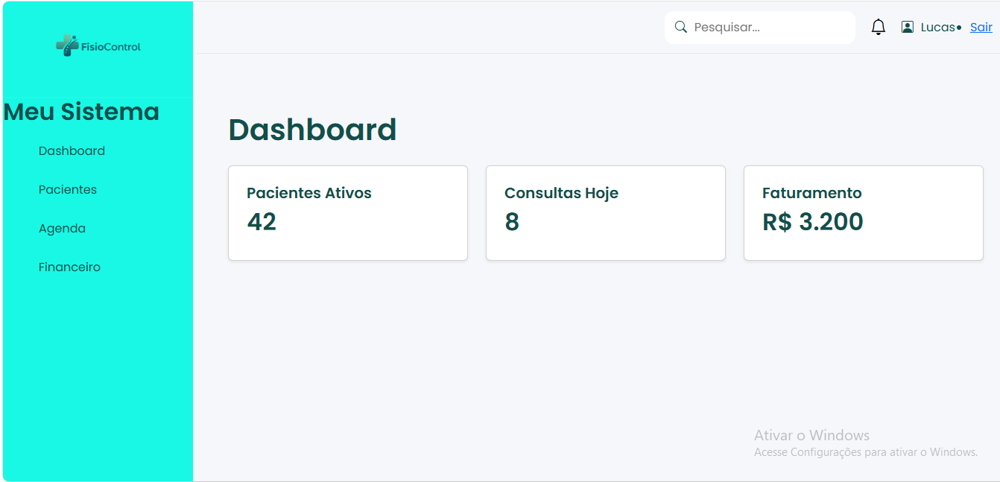

Lucas
Desenvolvedor Full Stack em Formação
Desenvolvedor de Software em formação, com foco em backend e aplicações web. Construo soluções utilizando Python, Flask, SQL, Docker e Git, buscando criar sistemas escaláveis, bem estruturados e orientados à resolução de problemas reais.
Tecnologias & Ferramentas
Stack técnica em constante evolução
Projetos em Destaque
Alguns dos trabalhos que desenvolvi recentemente

Radar Cidadão
Aplicação web capaz de coletar, processar e apresentar dados públicos sobre deputados de forma clara. Permite visualizar presença em sessões, projetos apresentados e gastos com recursos públicos através de gráficos intuitivos, incentivando a transparência pública. Desenvolvido com base na metodologia agil (Scrum).

Fisiocontrol
(Seu sistema de gestão clínica). Plataforma focada em UI/UX, e desenvolvida para otimizar o fluxo de agendamentos, fichas de evolução clínica e controle financeiro de profissionais da saúde.

Novo Projeto
Em desenvolvimento... Em breve uma nova solução full stack estruturada com banco de dados e regras de negócio inteligentes será listada aqui.